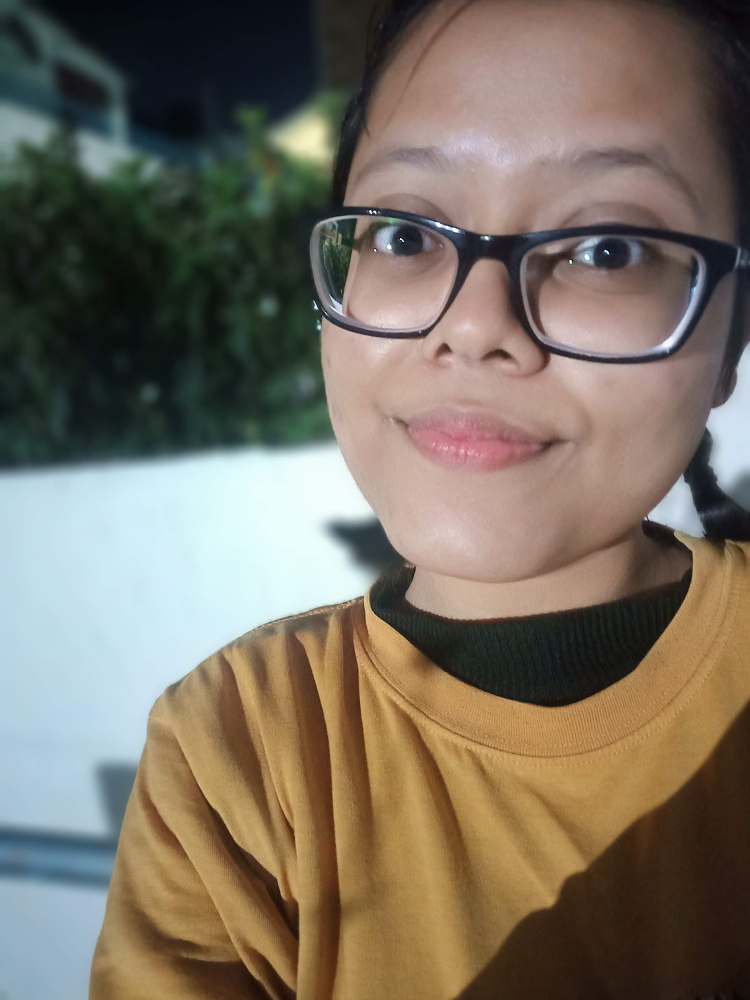

Kajal Singh

ABOUT ME -
(She/Her)
Psychology Student + Learner
SUMMARY
Hello! I am a psychology graduate from Lucknow University.
Currently I am on my academic break of 2 years to learn new skills apart from my course of interest.
- Learning: Web Development (Front-end & Back-end)
- Interested: Clinical, Educational & Cognitive Psychology.
- Puzzles: SUDOKU Classic (expert mode) and Jigsaw (interested)
EDUCATION
University Of Lucknow
Bachelor Of Arts - BA, Psychology (Jul 2019 - Jul 2022)
Kendriya Vidyalaya
Humanities - 12th (Apr 2011 - Mar 2019)
EXPERIENCE
Private Tutor - 2 years (Online)
Mar 2020 - Feb 2022
- Teach during Covid-19 via zoom
- Tackle most of the computer activities with supervision
- Helped turning into top 10
SKILLS
- Interpersonal Communication: Intermediate
- Planning & Organisation: Intermediate
- Story Writing: Intermediate
AWARDS & CERTIFICATIONS
- NEAT & HYGIENIC STUDENT - 1st Position (9th Grade - 2015)
- SUDOKU - 3rd Position (10th Grade - 2016)
- INTER HOUSE DEBATE - 3rd Position (11th Grade - 2017)
- POEM RECITATION - 1st Position (12th Grade - 2018)
OTHER
HOBBIES & INTERESTS
Contact Info